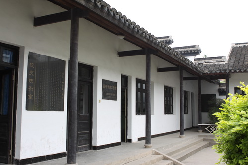
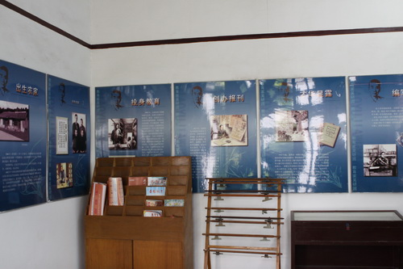

吴研因纪念馆外景

吴老塑像

历史资料展览
吴研因纪念馆位于江苏省江阴市要塞贯庄村。吴研因曾任民国政府教育部国民教育司司长。解放后，应周恩来邀请，任教育部初等教育司司长，教科书编审委员会副主任，小学教育司司长，曾主持小学教育体制改革。1950年，吴研因在民进三届一中全会上当选为民进中央常委；1956年，继续当选常委。1965年，吴研因在当选为全国政协常委。吴研因一生从事文化教育工作，倡导和推广白话文教育，为我国小学教育事业的发展作出了贡献。